<!-- Styles -->
<link rel="stylesheet" href="css/linea.css">

<!-- Main -->
<section class="main">
    <section class="banner-principal" id="banner">
        <div class="banner"></div>
    </section>
    <!-- Linea -->
    <div class="elements">
        <div class="timeline">
            <div class="timeline-header">
                <h1>Museo Geociencias</h1>
                <h3>Facultad de Minas</h3>
                <h4>Universidad Nacional de Colombia</h4>

            </div>
            <div class="timeline-main container">

                <div class="timeline-item linea0 row" id="linea0">
                    <div class="año col-12">
                        <h2>Línea Temporal</h2>
                    </div>
                    <div class="descript col-12">
                        <p>
                            Te invitamos a conocer la historia del Museo a lo largo del tiempo.
                            Una historia de más de cien años de la mano de la Facultad de Minas, sus profesores, estudiantes y egresados.
                        </p>
                    </div>
                </div>

                <div class="timeline-item linea1 row" id="linea1">
                    <div class="año col-12">
                        <h2>Actualidad</h2>
                    </div>
                    <div class="descript col-12 col-md-6">
                        <p>
                            El actual Museo de Geociencias de la Facultad de Minas de la Universidad Nacional de
                            Colombia
                            comprende un espacio en el cual se albergan colecciones que se constituyeron desde la
                            fundación de la Escuela Nacional de Minas en 1887, comenzaron como gabinetes y vitrinas,
                            que
                            luego fueron colecciones del Laboratorio de Mineralogía y del Museo de Mineralogía hasta
                            la
                            actualidad. Estas son: Colecciones Mineralógica, Petrográfica, Paleontológica, además de
                            un
                            Archivo histórico, fotográfico y centro de documentación.
                        </p>
                    </div>
                    <div class="foto d-none d-sm-block col-12 col-md-6">
                        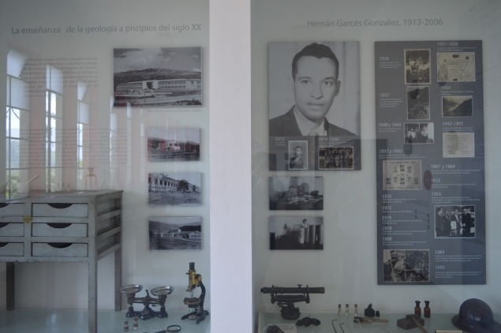
                        <p>
                            Foto Museo de Geociencias, 2016. Facultad de Minas,
                            Universidad Nacional de Colombia Sede Medellín. Tomado de:
                            https://minas.medellin.unal.edu.co/noticias/facultad/704-museo-de-geociencias-mas-de-un-siglo-preservando-el-conocimiento-de-la-tierra
                        </p>
                    </div>
                </div>

                <div class="timeline-item linea2 row" id="linea2">
                    <div class="año col-12">
                        <h2>1911</h2>
                    </div>
                    <div class="descript order-2 col-12 col-md-6">
                        <p>
                            La conformación de sus colecciones de Mineralogía y Geología inició entre 1906 y 1911,
                            cuando
                            la Escuela hacia parte de la Universidad de Antioquia, y durante su reapertura como ente
                            autónomo de la Universidad de Antioquia en 1911 se inauguró formalmente el coleccionismo
                            para la docencia y la investigación
                        </p>
                    </div>
                    <div class=" foto order-1 d-none d-sm-block col-12 col-md-6">
                        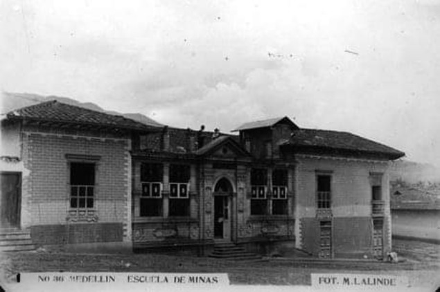
                        <p>Escuela Nacional de Minas</p>
                    </div>
                </div>

                <div class="timeline-item linea3 row" id="linea3">
                    <div class="año col-12">
                        <h2>1911</h2>
                    </div>
                    <div class="descript col-12 col-md-6">
                        <p>
                            El profesor Tulio Ospina, desde la dirección de la Escuela, procuró adquirir colecciones de
                            minerales en el extranjero, así como equipos para el estudio de ellos. Él tuvo la idea de
                            conformar un Museo de Geología, y empezó con las colecciones de minerales, para lo cual se
                            apoyó en la solicitud a sus amigos y conocidos que residían en el exterior de cotizaciones
                            de colecciones y equipos.
                        </p>
                    </div>
                    <div class="foto d-none d-sm-block col-12 col-md-6">
                        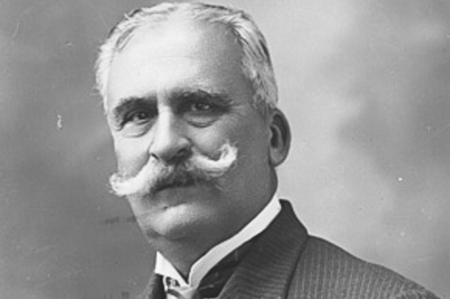
                        <p>Tulio Ospina, El pionero</p>
                    </div>
                </div>

                <div class="timeline-item linea4 row" id="linea4">
                    <div class="año col-12">
                        <h2>1921</h2>
                    </div>
                    <div class="descript order-2 col-12 col-md-6">
                        <p>
                            Uno de los primeros registros de las colecciones se encuentra en el catálogo que realizó el
                            profesor Luis Felipe Osorio en 1921, donde fue posible encontrar que para entonces la
                            Escuela Nacional de Minas contaba con cerca de 600 muestras de rocas, minerales industriales
                            622 muestras, y 95 fósiles.
                        </p>
                    </div>
                    <div class="foto order-1 d-none d-sm-block col-12 col-md-6">
                        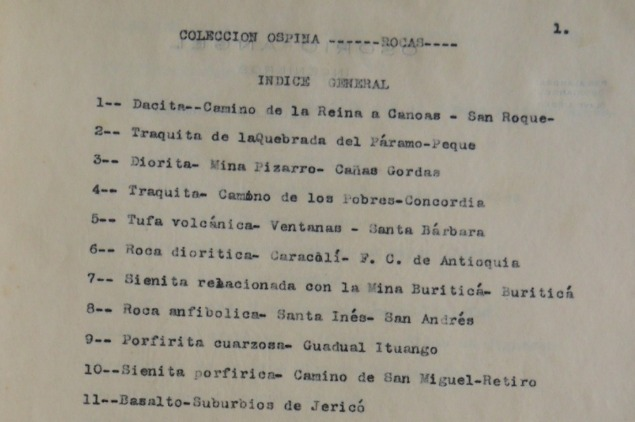
                        <p>
                            Catálogo museo de Geología y Mineralogía “Salón Tulio
                            Ospina”: Luis Felipe Osorio, ca. 1921. Archivo Central Museo de Geociencias, Facultad de
                            Minas, Universidad Nacional, Fondo Catálogos.
                        </p>
                    </div>
                </div>

                <div class="timeline-item linea5 row" id="linea5">
                    <div class="año col-12">
                        <h2>1921</h2>
                    </div>
                    <div class="descript col-12 col-md-6">
                        <p>
                            Esta se enriqueció con la colección de rocas y secciones delgadas que entregó el
                            alemán Dr. Emil Grosse, producto del trabajo de campo en el Suroeste Antioqueño entre 1919 y
                            1921, en el marco de la elaboración del mapa geológico de esta región contratado por el
                            Ferrocarril de Antioquia. Se encuentra además un índice de las muestras colectadas en campo
                            del
                            trabajo por él, adelantado en el levantamiento del mapa geológico del yacimiento carbonífero
                            de
                            Amagá, el cual se conserva parcialmente y hace parte de la Colección Petrográfica del Museo
                            de
                            Geociencias.
                        </p>
                    </div>
                    <div class="foto d-none d-sm-block col-12 col-md-6">
                        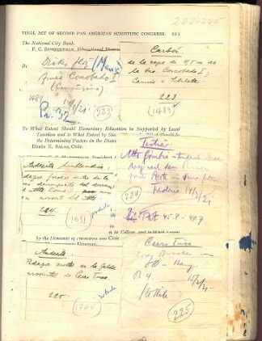
                        <p>
                            índice de las muestras colectadas en campo” levantamiento
                            del mapa geológico del yacimiento carbonífero de Amagá: Grosse, Emil, ca. 1921. Archivo
                            Central Museo de Geociencias, Facultad de Minas, Universidad Nacional, Fondo Catálogos.
                        </p>
                    </div>
                </div>

                <div class="timeline-item linea6 row" id="linea6">
                    <div class="año col-12">
                        <h2>1921</h2>
                    </div>
                    <div class="descript order-2 col-12 col-md-6">
                        <p>
                            Luego de la muerte de Tulio Ospina, el Consejo de la Escuela hizo un reconocimiento a
                            su labor y dispuso llamar el lugar donde se encontraba ubicado el Museo de Geología y
                            Mineralogía como “Salón Tulio Ospina”, así: “Dar el nombre “Tulio Ospina” al salón del Museo
                            de
                            Geología y Mineralogía de la Escuela donde se conservan las valiosas colecciones de rocas y
                            minerales formada por él y obsequiadas al Instituto; y poner en dicho salón una placa
                            conmemorativa.
                        </p>
                    </div>
                    <div class="foto order-1 d-none d-sm-block col-12 col-md-6">
                        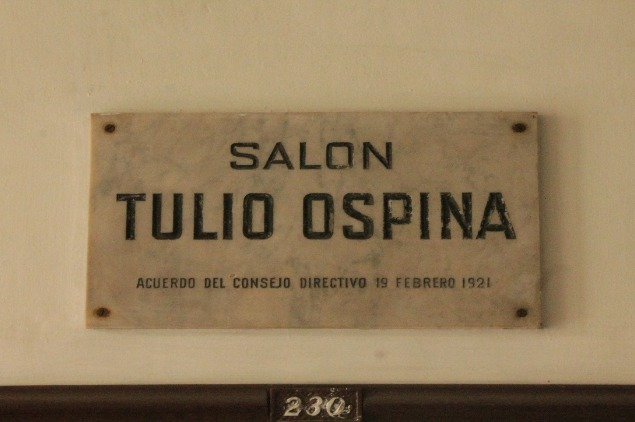
                        <p>
                            Placa conmemorativa por la muerte del profesor Tulio
                            Ospina. Salón Tulio Ospina, bloque M3, segundo piso. Facultad de Minas de la Universidad
                            Nacional de Colombia sede Medellín. (Foto: Alejandro García).
                        </p>
                    </div>
                </div>

                <div class="timeline-item linea7 row" id="linea7">
                    <div class="año col-12">
                        <h2>1930</h2>
                    </div>
                    <div class="descript col-12 col-md-6">
                        <p>
                            Los gabinetes que a la fecha almacenaban la colección en el salón Tulio Ospina.
                        </p>
                    </div>
                    <div class="foto d-none d-sm-block col-12 col-md-6">
                        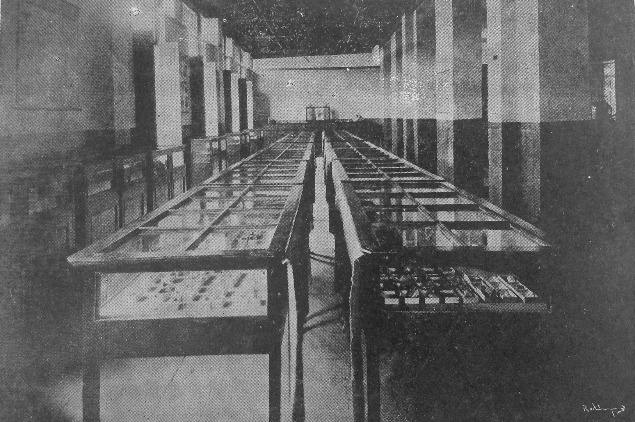
                        <p>Gabinete de Mineralogía de la Escuela Nacional de Minas.
                            c.a. 1930. Fuente: Anales de la Escuela Nacional de Minas. 1929-1930. 48.</p>
                    </div>
                </div>

                <div class="timeline-item linea8 row" id="linea8">
                    <div class="año col-12">
                        <h2>1934</h2>
                    </div>
                    <div class="descript order-2 col-12 col-md-6">
                        <p>
                            Las colecciones del museo también se beneficiaron de diferentes actividades docentes, tales
                            como las salidas o excursiones de la asignatura Geología Práctica impartida, por los
                            profesores: Carlos Cock (1894-1905), Ambroise Hyacinthe (1890), Francisco Gómez (1905),
                            Carlos de la Cuesta (1905), Pablo Zürcher (1909-1915), Tulio Ospina (1893-1920),). Luis F.
                            Osorio (1920-1924), Carlos Gutiérrez (1921), Carlos Gärtner (1921), Emil Grosse (1921),
                            Mariano Ospina (1915, 1921-1924), Richard Sonder (1924), Robert Wokittel (1925-1936). Juan
                            de la Cruz Posada (1914, 1933-1937), Gerardo Botero (1937-1971).
                        </p>
                    </div>
                    <div class="foto order-1 d-none d-sm-block col-12 col-md-6">
                        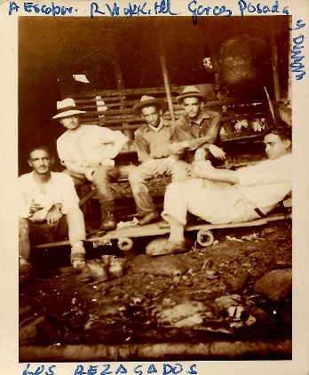
                        <p>“Los Rezagados”, Salida al pacífico Colombiano, 1934.
                            Sentados de Izquierda a derecha A. Escobar, R. Wokittel (profesor de la clase de
                            Geología), H. Garcés, F. Posada y A. Durán. Albúm de fotografías de Hernán Garces.
                            Archivo Central Museo de Geociencias, Facultad de Minas, Universidad Nacional, Fondo
                            Doctor Hernán Garcés González.</p>
                    </div>
                </div>

                <div class="timeline-item linea9 row" id="linea9">
                    <div class="año col-12">
                        <h2>1935</h2>
                    </div>
                    <div class="descript col-12 col-md-6">
                        <p>
                            Las salidas de campo indispensables en la formación y la labor del geólogo, además fuente
                            importante de adquisición de muestras para el museo.
                        </p>
                    </div>
                    <div class="foto d-none d-sm-block col-12 col-md-6">
                        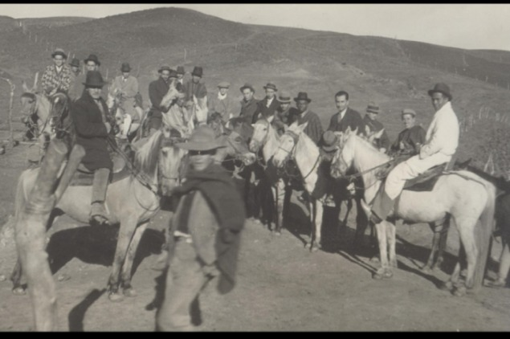
                        <p>Excursión al oriente del país, hecha en 1935 por el grupo
                            de egresados de ese año, bajo la dirección del profesor Roberto Wokittel en Cuestaboba,
                            Páramo de Santurban, entre Mutiscua y Bucaramanga. Albúm de fotografías de Hernán
                            Garces. Archivo Central Museo de Geociencias, Facultad de Minas, Universidad Nacional,
                            Fondo Doctor Hernán Garcés González.</p>
                    </div>
                </div>

                <div class="timeline-item linea10 row" id="linea10">
                    <div class="año col-12">
                        <h2>1938</h2>
                    </div>
                    <div class="descript order-2 col-12 col-md-6">
                        <p>
                            Algunas tesis de grado adelantadas por los estudiantes de la Escuela se hicieron
                            en torno a las colecciones del museo. Una de ellas fue “Bosquejo de Paleontología
                            Colombiana” dirigida por el doctor Juan de la Cruz Posada y presentada por el estudiante
                            Gerardo Botero Arango.
                        </p>
                    </div>
                    <div class="foto order-1 d-none d-sm-block col-12 col-md-6">
                        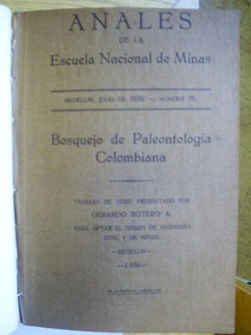
                        <p>Botero, Gerardo. “Bosquejo de Paleontología Colombiana”.
                            Anales de la Escuela Nacional de Minas, núm. 35, julio de 1938: 89-97.</p>
                    </div>
                </div>

                <div class="timeline-item linea11 row" id="linea11">
                    <div class="año col-12">
                        <h2>1940</h2>
                    </div>
                    <div class="descript col-12 col-md-6">
                        <p>
                            El traslado de la Escuela Nacional de Minas en 1940 como resultado de su
                            incorporación a la Universidad Nacional de Colombia, marcó sin duda un importante cambio en
                            la dinámica de la institución, a su vez que coincidió con la incorporación de las
                            generaciones de ingenieros egresados en la década de 1930 a la planta docente y
                            administrativa de la Escuela, como por ejemplo el nombramiento de Gerardo Botero como Decano
                            de la nueva Facultad de Minas, Hernán Garcés como director de la Planta Metalúrgica Nacional
                            y Gabriel Trujillo como director del entonces ya Museo de Mineralogía.
                        </p>
                    </div>
                    <div class="foto d-none d-sm-block col-12 col-md-6">
                        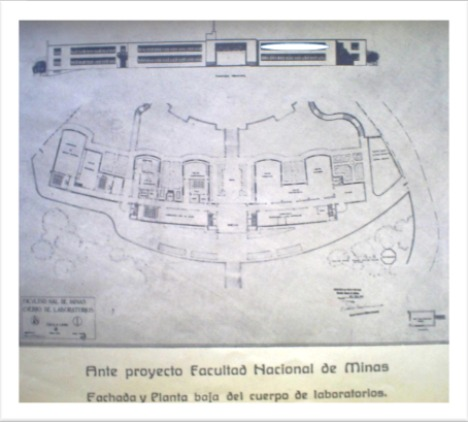
                        <p>Planos Facultad Nacional de Minas de Medellín. Fuente:
                            Anales de la Escuela Nacional de Minas. 1940, número 48.</p>
                    </div>
                </div>

                <div class="timeline-item linea12 row" id="linea12">
                    <div class="año col-12">
                        <h2>1940</h2>
                    </div>
                    <div class="descript order-2 col-12 col-md-6">
                        <p>
                            El Museo desarrolló una política de colecciones que privilegió la colección de
                            minerales. Esta iniciativa la lideró primeramente el profesor Alejandro Delgado Trillos,
                            entre 1937-1944, quien adelantó con un método riguroso de ordenamiento la clasificación de
                            la colección, siguiendo la técnica de James Dana (1837), que atendía la estructura y la
                            composición interna de los minerales.
                        </p>
                    </div>
                    <div class="foto order-1 d-none d-sm-block col-12 col-md-6">
                        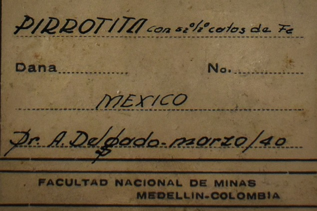
                        <p>Ficha de mineral donado por Alejandro Delgado</p>
                    </div>
                </div>

                <div class="timeline-item linea13 row" id="linea13">
                    <div class="año col-12">
                        <h2>1944</h2>
                    </div>
                    <div class="descript col-12 col-md-6">
                        <p>
                            En 1944 se inaugura el edificio de la Facultad Nacional de Minas de Medellín,
                            adscrita a la Universidad Nacional, con motivo del Primer Congreso Nacional de Ingenieros.
                            En
                            ese momento se conoce el Museo de Mineralogía, sala Tulio Ospina, en el bloque M3, edificio
                            que
                            se declaró Monumento Nacional mediante resolución 051 de octubre 26 de 1994.
                        </p>
                    </div>
                    <div class="foto d-none d-sm-block col-12 col-md-6">
                        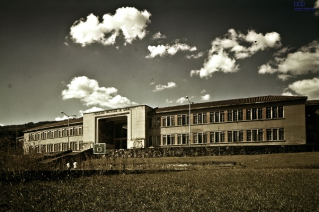
                        <p>Bloque M3 Facultad Nacional de Minas de Medellín.</p>
                    </div>
                </div>

                <div class="timeline-item linea14 row" id="linea14">
                    <div class="año col-12">
                        <h2>1946</h2>
                    </div>
                    <div class="descript order-2 col-12 col-md-6">
                        <p>
                            Tras la salida del profesor Delgado, asumió la dirección del Museo el profesor Gabriel
                            Trujillo
                            Uribe (1912-¿) hasta el año de 1982 . Para llevar a cabo el proyecto del Museo, realizó
                            visitas
                            a museos de carácter internacional como: Museo Smithsonian. Museo de Historia Natural New
                            York,
                            US National Museum, Smithsonian Institute, y The arts and Industries Building, en el año de
                            1945.
                        </p>
                    </div>
                    <div class="foto order-1 d-none d-sm-block col-12 col-md-6">
                        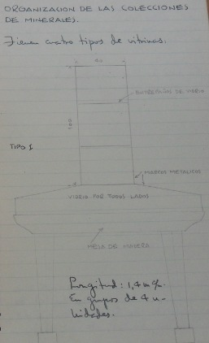
                        <p>Diseño vitrina. Archivo Museo Geociencias, Universidad
                            Nacional, Sede Medellín (ACMG) Fondo Museo Geociencias, Serie Libretas, Libreta Gabriel
                            Trujillo 1, folio 23.</p>
                    </div>
                </div>

                <div class="timeline-item linea15 row" id="linea15">
                    <div class="año col-12">
                        <h2>1952</h2>
                    </div>
                    <div class="descript col-12 col-md-6">
                        <p>
                            El profesor Trujillo promovió notablemente el desarrollo de las colecciones de
                            minerales, proyectó, diseñó y renovó la sala de exposiciones, aumentó la colección como el
                            resultado directo de una red de contactos con las empresas mineras del país, donde obtuvo
                            muestras para las colecciones de la Facultad. También sostuvo contactos internacionales e
                            intercambió muestras con institutos de otros países. Actuó como director del Museo por más
                            de 40
                            años, procurando la diversidad y aumento de especímenes, notablemente, en la colección de
                            Minerales.
                        </p>
                    </div>
                    <div class="foto d-none d-sm-block col-12 col-md-6">
                        
                        <p>Salón Tulio Ospina, Museo de Mineralogía. Fuente: Anales
                            de la Escuela Nacional de Minas. 1952.</p>
                    </div>
                </div>

                <div class="timeline-item linea16 row" id="linea16">
                    <div class="año col-12">
                        <h2>1960</h2>
                    </div>
                    <div class="descript order-2 col-12 col-md-6">
                        <p>
                            Durante esta época se adelantó la adquisición de minerales a través de compra de
                            colecciones a casas como la Ward`s Science Establishment de Rochester en Nueva York, la
                            Krantz
                            de Alemania, Bureau de Recherches Geologiques, Geophysiques y Mineres en Paris y
                            Crasekenhage de
                            Hamburgo entre otras, durante las décadas de los años cuarenta, cincuenta y sesenta del
                            siglo
                            XX. La adquisición de minerales a través de compra favoreció la adquisición de especímenes
                            de
                            minerales raros, escasos, bellos o excepcionales.
                        </p>
                    </div>
                    <div class="foto or1der-1 d-none d-sm-block col-12 col-md-6">
                        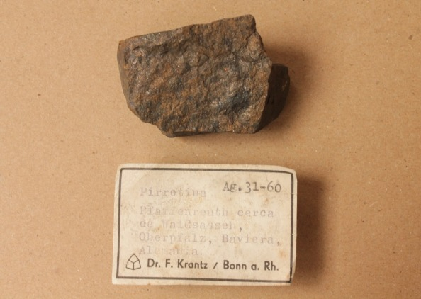
                        <p>Muestra de Pirrotina comprada a la Casa Krantz en Bonn,
                            Alemania. Fuente: Museo de Geociencias. (Foto: Alejandro García).</p>
                    </div>
                </div>

                <div class="timeline-item linea17 row" id="linea17">
                    <div class="año col-12">
                        <h2>1970-1980</h2>
                    </div>
                    <div class="descript col-12 col-md-6">
                        <p>
                            De manera reiterada se dio a la tarea de hacer donaciones a colegios, como por
                            ejemplo los colegios de María Auxiliadora, La Presentación, La Salle, La Enseñanza, en la
                            Ciudad
                            de Medellín; a otros municipios de Antioquia(Jericó, La Ceja, Cisneros, Liborina, Envigado,
                            etc.) y Departamentos del País como Choco, Norte de Santander, Atlántico, Cundinamarca,
                            Valle,
                            entre otros. También a instituciones de educación superior, como por ejemplo la Fundación
                            Universidad de Bogotá “Jorge Tadeo Lozano”, la Universidad Pedagógica de Colombia y la
                            Universidad del Valle, el Museo del Instituto Geológico Nacional, el Departamento de
                            Geología de
                            la Sede Bogotá, Universidad del Valle, UPTC, etc.
                            Durante esta época, el Museo también abrió sus puertas para dictar cursos a los docentes de
                            las
                            instituciones y para recibir visitas por parte de los colegios.
                        </p>
                    </div>
                    <div class="foto d-none d-sm-block col-12 col-md-6">
                        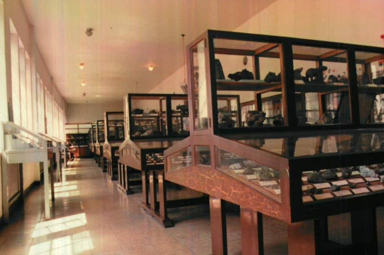
                        <p>Museo de Mineralogía en el salón Tulio Ospina</p>
                    </div>
                </div>

                <div class="timeline-item linea18 row" id="linea18">
                    <div class="año col-12">
                        <h2>1990</h2>
                    </div>
                    <div class="descript order-2 col-12 col-md-6">
                        <p>
                            Hasta finales del siglo XX, el Museo conservó en su Sala el esplendor original, el
                            mobiliario museográfico y la arquitectura del edificio. En el año 2004 se integraron al
                            Museo de
                            Mineralogía las colecciones de Paleontología y Petrología, que para ese entonces estaban
                            dispersas en la Facultad, dando lugar a la creación del Museo de Geociencias, cuyo objetivo
                            incluye recuperar las colecciones patrimoniales de la Facultad, y pasó de ser una sala de
                            Mineralogía a una sala de Geociencias, en concordancia con la integración de las
                            colecciones.
                        </p>
                    </div>
                    <div class="foto order-1 d-none d-sm-block col-12 col-md-6">
                        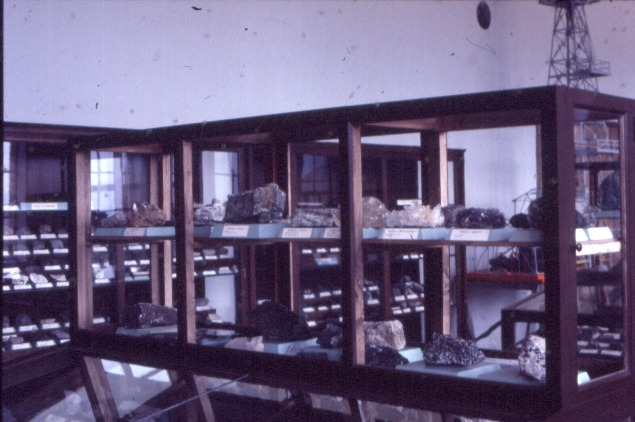
                        <p>Imágenes del Museo de Geociencias anteriores al año 2004.
                            Filminas Decanatura Facultad de Minas.</p>
                    </div>
                </div>

                <div class="timeline-item linea19 row" id="linea19">
                    <div class="año col-12">
                        <h2>2015</h2>
                    </div>
                    <div class="descript col-12 col-md-6">
                        <p>
                            La sala de exhibición se remodeló en el 2015, momento en el que la museografía rompió el
                            diseño
                            estático que se mantuvo, y se enfrentó al reto de exhibir los conceptos de la Geociencias
                            favoreciendo que los visitantes construyan sus propios conocimientos a partir de la
                            musealización de la colección como resultado de un trabajo conjunto entre profesores,
                            estudiantes y expertos, realizando una labor interdisciplinaria.
                        </p>
                    </div>
                    <div class="foto d-none d-sm-block col-12 col-md-6">
                        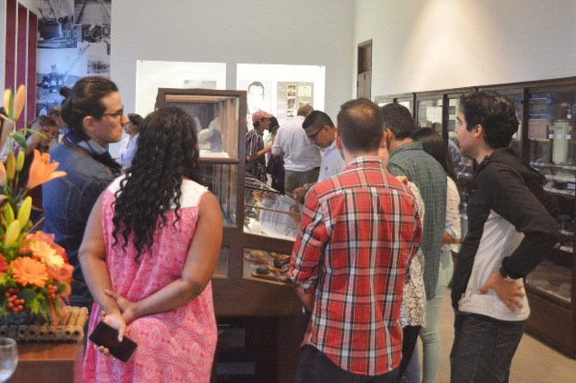
                        <p>Reinauguración del Museo de Geociencias, 2015 </p>
                    </div>
                </div>

                <div class="timeline-item linea20 row" id="linea20">
                    <div class="año col-12">
                        <h2>Actualidad</h2>
                    </div>
                    <div class="descript order-2 col-12 col-md-6">
                        <p>
                            Esta musealización siempre ha mantenido el reconocimiento y apreciación de los
                            bienes, los entornos y los contextos de las colecciones, sus usos y funciones en diferentes
                            momentos y lugares, como una herencia, un patrimonio que encierra las experiencias
                            estudiantiles, investigativas, académicas que evocan el trabajo realizado por la comunidad
                            universitaria.
                        </p>
                    </div>
                    <div class="foto order-1 d-none d-sm-block col-12 col-md-6">
                        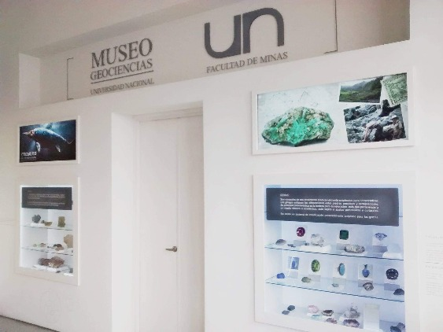
                        <p>Museo de Geociencias, 2018</p>
                    </div>
                </div>

                <div class="timeline-item linea21 row" id="linea21">
                    <div class="año col-12">
                        <h2>Actualidad</h2>
                    </div>
                    <div class="descript col-12 col-md-6">
                        <p>
                            La exposición, sin dudas ha resultado ser una plataforma material para adelantar
                            investigación, se ha constituido en la columna vertebral del Museo por cuanto es la mejor
                            forma
                            de divulgación, una ventana para acercarse a los públicos, bien sean los visitantes internos
                            o
                            externos a la Universidad.
                        </p>
                    </div>
                    <div class="foto d-none d-sm-block col-12 col-md-6">
                        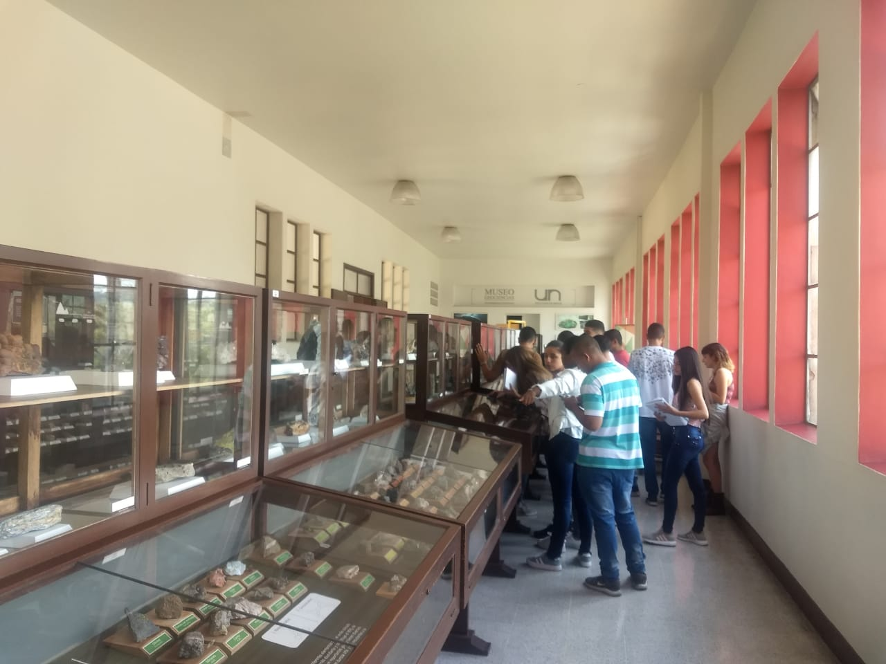
                        <p>Museo de Geociencias, 2019</p>
                    </div>
                </div>
            </div>
        </div>
        <div class="gotop">
            <a href="#"><i class="fas fa-arrow-up"></i></a>
        </div>
        <div class="lineaindice">
            <h4>ÍNDICE</h4>
        </div>
        <div class="lineamenu">
            <a href="#linea0">Inicio</a>
            <a href="#linea1">Actual</a>
            <a href="#linea2">1911</a>
            <a href="#linea3">1911</a>
            <a href="#linea4">1921</a>
            <a href="#linea5">1921</a>
            <a href="#linea6">1921</a>
            <a href="#linea7">1930</a>
            <a href="#linea8">1934</a>
            <a href="#linea9">1935</a>
            <a href="#linea10">1938</a>
            <a href="#linea11">1940</a>
            <a href="#linea12">1940</a>
            <a href="#linea13">1944</a>
            <a href="#linea14">1946</a>
            <a href="#linea15">1952</a>
            <a href="#linea16">1960</a>
            <a href="#linea17">1980</a>
            <a href="#linea18">1990</a>
            <a href="#linea19">2015</a>
            <a href="#linea20">Actual</a>
            <a href="#linea21">Actual</a>
        </div>
    </div>
</section>

<!-- Scripts -->
<script src="js/linea.js"></script>
